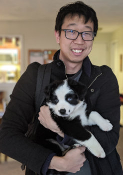

Home Page of Youngmin Park
|  Fig 1. My roommates' puppy Sky. |
|
||||||
Personal Bio
 I'm mostly from Madison, Wisconsin (see left, image credit Wikipedia). I am originally from Seoul, South Korea, but because my Dad was a diplomat, we moved shortly thereafter to a random sequence of English-speaking countries. I've lived in the US since the second grade. I went to middle school and high school in Madison, WI. I went to college in Cleveland and received my BS and MS in applied math at Case Western Reserve University. No, it is not a military school, it is named after the Western Reserve, which is territory that includes most of Northeastern Ohio. The "Case" part comes from the Case Institute of Technology (CIT) which merged with Western Reserve University in the 70s. At the time, both universities were top-tier research institutions with CIT second only to Cal Tech.
I'm mostly from Madison, Wisconsin (see left, image credit Wikipedia). I am originally from Seoul, South Korea, but because my Dad was a diplomat, we moved shortly thereafter to a random sequence of English-speaking countries. I've lived in the US since the second grade. I went to middle school and high school in Madison, WI. I went to college in Cleveland and received my BS and MS in applied math at Case Western Reserve University. No, it is not a military school, it is named after the Western Reserve, which is territory that includes most of Northeastern Ohio. The "Case" part comes from the Case Institute of Technology (CIT) which merged with Western Reserve University in the 70s. At the time, both universities were top-tier research institutions with CIT second only to Cal Tech.
For my PhD I went to the University of Pittsburgh. The city has a similar story to Cleveland, but generally fared better. Here, I had the distinct pleasure of working with my advisor Bard Ermentrout. He is great. I also hold the rest of my thesis committee in high regard: Rob Coalson, Brent Doiron, and Jon Rubin.
I used to play a lot of shows but have mostly retired from music as a hobby. I still play my instruments occasionally, and the main part of my repertoire includes guitar (since 2002) and ukulele (since 2015). I've replaced music with more visual arts including pottery (since 2015) and drawing (since 2017). Please see the hobbies page for some of my work, which I will continue to improve upon for the forseeable future.